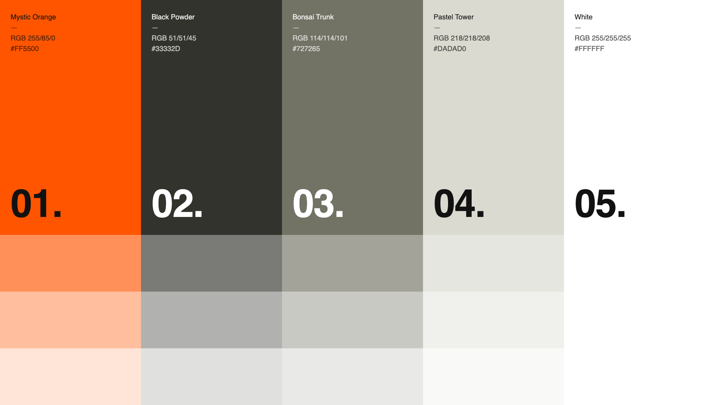
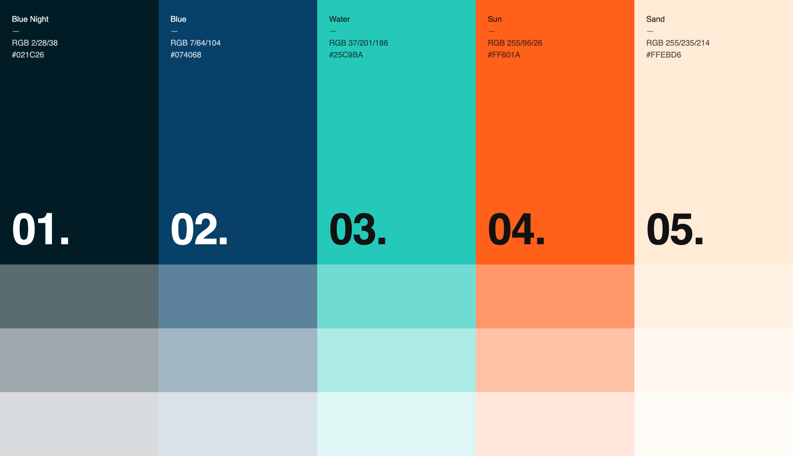
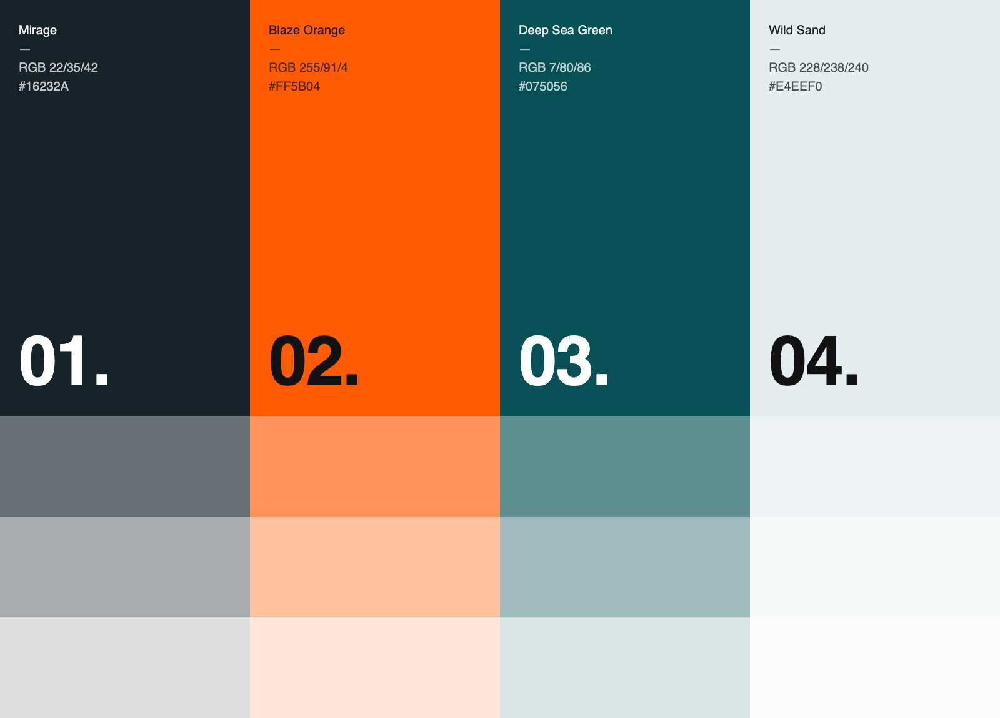
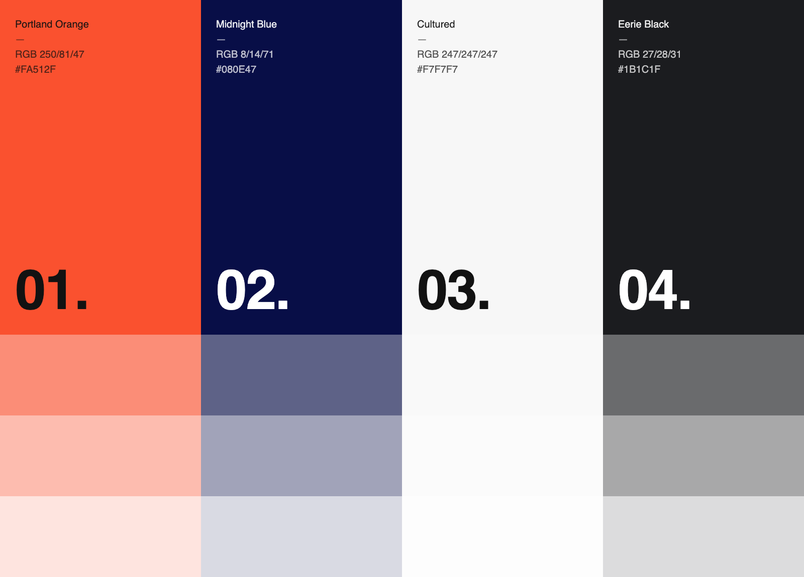

Preoptima — Colour, round 2
Rust didn't land — it read as old-fashioned, not bold. Rather than guess at a fix, here are four literal reference palettes, unmixed, exactly as found — no in-house tinting. The question is simple: does any of these feel sufficiently "pop"?
01 — Pantone Orange

Strength: the most literally "pop" of the four — a true vivid orange against warm, neutral greys. Closest in spirit to the rust we already tried, just turned up.
02 — Blue Night Ramp

Strength: the widest tonal range of the four — a near-black navy running up to a warm sand, with teal and orange both in play. Reads dramatic, not safe.
03 — Mirage

Strength: the most grounded of the four — a deep, cool ink with a genuine working mid tone, so the orange lands as a real accent rather than the whole story.
04 — Portland Midnight

Strength: the one that stood out hardest in the references — sharp, high-contrast, warm accent against true cold ink.
Have a look and send back your two favourites. We'll build those two into the real pricing document next, and that comparison is what actually decides it.